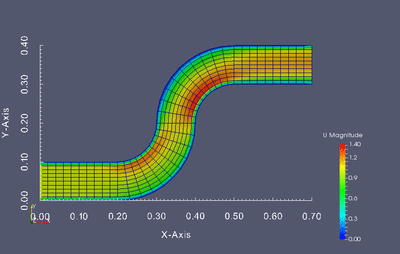
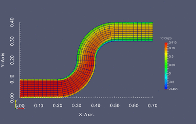

Wprowadzenie
Tworzenie własnych klas
Uruchamianie zewnętrznych procesów
Konsola “ipython”
Tworzenie własnych generatorów
Tworzenie własnych modułów
Instalacja OpenFOAM i ParaView
Do rozwiązania poniższego zadania będzie wymagane zainstalowanie aplikacji OpenFOAM. OpenFOAM jest zbiorem różnych solverów opensource, które pozwalają na rozwiązywanie zagadnień obliczeniowej mechaniki płynów. W przypadku naszego zadania będzie on zastosowany do tworzenia siatki i wykonania obliczeń przepływu 2D, których wynik będzie następnie przez nas wykorzystany do utworzenia optymalizacji. Instalacja OpenFOAM z pakietów jest bardzo prosta. Opis instalacji można znaleźć pod tym linkiem. Poniżej opisujemy dokładnie te same kroki:
- Należy na początek dodać repozytorium OpenFOAM do system, tak aby nasz system wiedział skąd ma pobrać aplikację. W tym celu w konsoli wpisujemy:
- Oprócz dodania repozytorium musimy odświeżyć nasz manager pakietów:
- Na koniec możemy już zainstalować samego OpenFOAMa
OpenFOAM domyślnie powinien zostać zainstalowany w lokalizacji “/opt/openfoam30”.
Oprócz samego OpenFOAMa potrzebujemy także narzędzia do wykonywania postprocessingu. Świetnie nadaje się do tego narzędzie ParaView które domyślnie wspiera wczytywanie siatki i danych wygenerowanych przez OpenFOAMa. Aplikację tą można zainstalować na dwa sposoby: Z repozytorium OpenFOAM (posiada dodatkowe wsparcie do danych OpenFOAMa):
Drugim sposobem jest pobranie ParaView z oficjalnego repozytorium - tutaj wystarczy pobrać archiwum i następnie je rozpakować. Zaletą tego podejścia jest pobranie najnowszej dostępnej wersji tego oprogramowania.
Zadanie
Dokonaj optymalizacji kształtu poniższej geometrii tak aby otrzymany profil kanału zapewniał najmniejszą stratę energii przepływu. Optymalizacji powinny podlegać jednie kolanka kanału, nie wlot i wylot.
kanal
Stratę przepływu można wyznaczyć jako różnicę ciśnienia całkowitego pomiędzy wlotem i wylotem. Twoim zadaniem jest napisanie skryptu w języku Python który będzie służył do modyfikacji siatki obliczeniowej, wczytywania wyników oraz uruchamiania kolejnych symulacji w pętli optymalizacyjnej.
Kod powinien realizować następujący zadania:
- Utworzyć bazową siatkę obliczeniową.
- Wczytywać i zapisywać współrzędne węzłów siatki obliczeniowej z formatu OpenFOAM
- Wczytywać wyniki z pliku zawierającego obliczone całki z ciśnienia całkowitego na wlocie i wylocie domeny.
- Uruchamiać symulację
- Uruchamiać narzędzie minimize z biblioteki scipy.optimize w celu
Symulacje powinny zostać prowadzone przy użyciu aplikacji OpenFOAM zwanej “simpleFoam”, która implementuje solver przepływów nieściśliwych. Gotowa symulacja zawierająca wszystkie ustawienia znajduje się
Bazowa siatka wraz z ustawieniami
przypadek a)
Optymalizacji możesz dokonać posługując się jedną z funkcji znajdujących się w pakiecie scipy.optimize. Aby wyznaczyć straty przepływu skorzystaj z “channel_optimization”
optymalizacja dwu parametryczna
 
optymalizacja 4-parometrowa